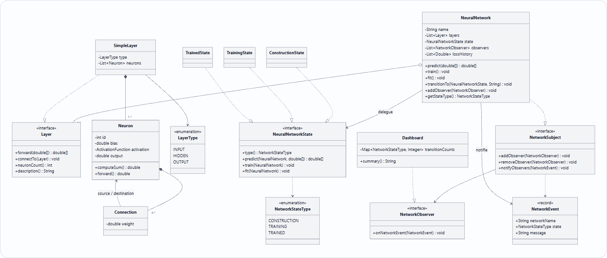
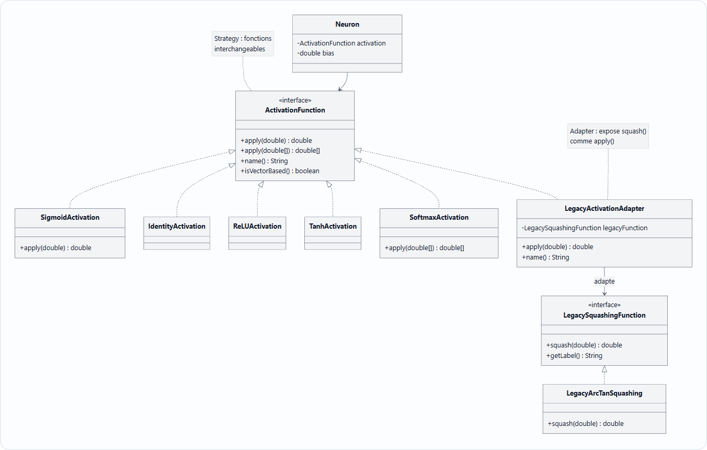
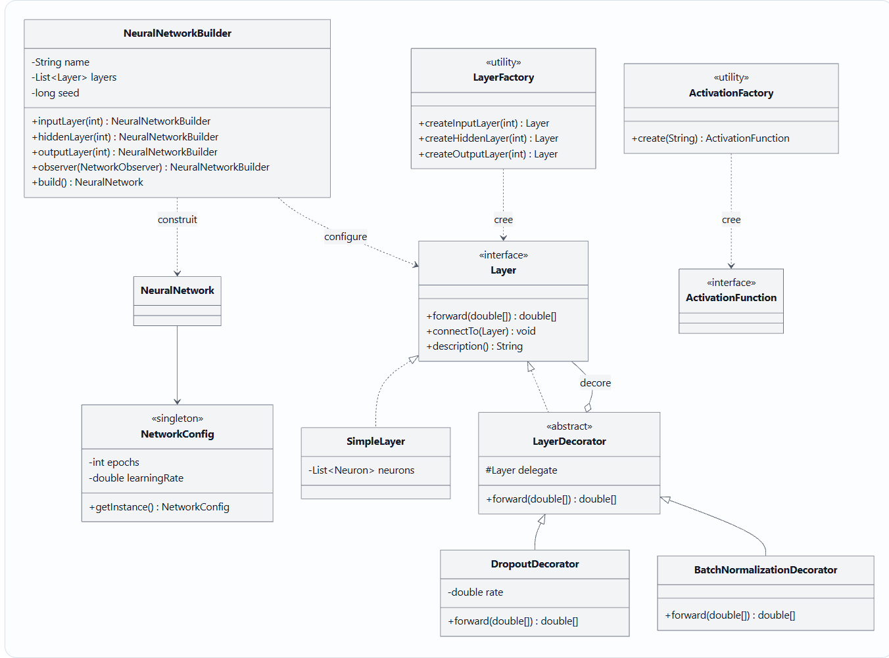
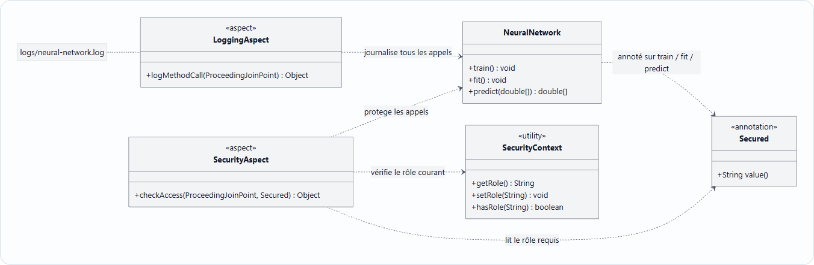
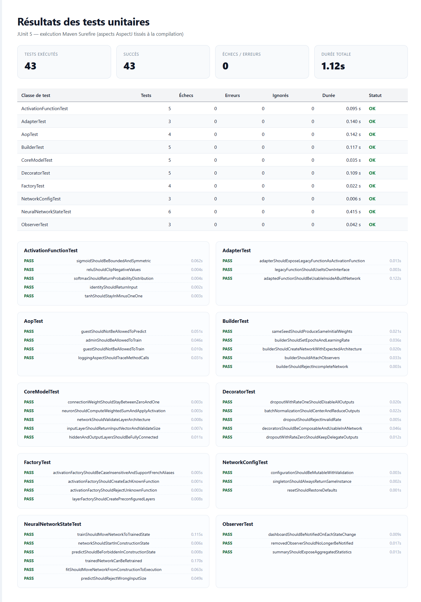
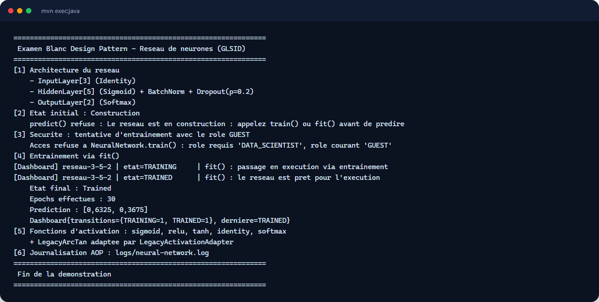
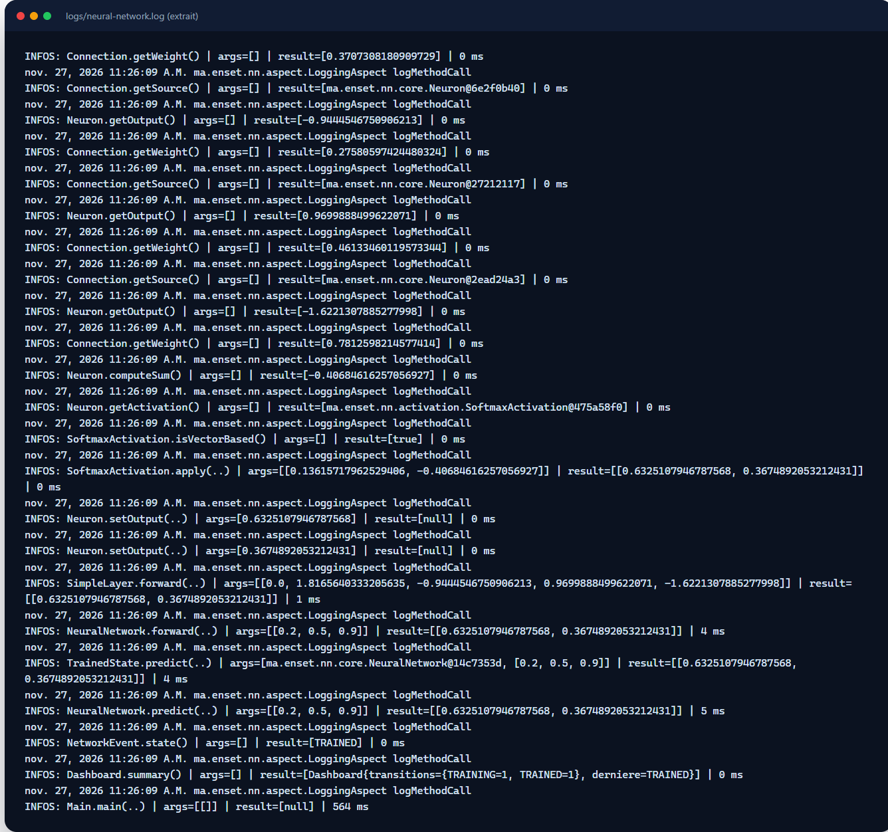

L'énoncé demande la modélisation et l'implémentation orientée objet, en Java, d'un réseau de neurones artificiels entièrement connecté. Un réseau est composé de couches (Input, Hidden, Output), chaque couche contient des neurones et chaque neurone reçoit des connexions pondérées par un poids W ∈ [0, 1], additionne le biais b, puis applique une fonction d'activation avant de transmettre sa sortie à la couche suivante. La méthode predict(double[] input) retourne le vecteur de sortie du réseau.
Au-delà du calcul, la difficulté porte sur la qualité de conception : fonctions d'activation interchangeables, adaptation d'une ancienne bibliothèque, états du réseau, notification d'un tableau de bord, enrichissement dynamique des couches, journalisation et sécurisation transverses. Chaque exigence est traitée par un pattern dédié, puis des améliorations (Factory, Builder, Singleton) viennent compléter l'architecture.
Le tableau ci-dessous met en regard chaque contrainte de l'énoncé et le pattern retenu. Les choix privilégient le faible couplage, l'ouverture à l'extension et le respect du principe de responsabilité unique.
| # | Exigence | Pattern | Implémentation |
|---|---|---|---|
| a | Famille de fonctions d'activation encapsulées et interchangeables | Strategy | ActivationFunction + Sigmoid, Identity, ReLU, Tanh, Softmax. Le neurone détient une stratégie et peut la remplacer. |
| b | Adapter une ancienne fonction d'activation à interface différente | Adapter | LegacyActivationAdapter adapte LegacySquashingFunction (méthode squash()) à ActivationFunction (apply()) sans modifier l'ancien code. |
| c | États Construction, Training, Trained ; predict réservé à l'état entraîné |
State | NeuralNetworkState + ConstructionState, TrainingState, TrainedState. Le contexte délègue train(), fit() et predict() à l'état courant. |
| d | Notifier les composants dépendants lors d'un changement d'état | Observer | NetworkSubject / NetworkObserver ; Dashboard agrège et affiche les statistiques à chaque transition. |
| e | Faire évoluer dynamiquement le comportement des couches | Decorator | LayerDecorator + DropoutDecorator et BatchNormalizationDecorator, composables et utilisables dans le réseau. |
| f | Journaliser toutes les méthodes | Aspect AOP | LoggingAspect (AspectJ, tissage à la compilation) trace méthode, arguments, résultat et durée dans logs/neural-network.log. |
| g | Sécuriser l'application | Aspect AOP | SecurityAspect intercepte les méthodes annotées @Secured et vérifie le rôle via SecurityContext. |
| + | Améliorations libres | Factory, Builder, Singleton | Création centralisée des couches et fonctions (LayerFactory, ActivationFactory), construction fluide (NeuralNetworkBuilder), configuration unique (NetworkConfig). |
Le réseau démarre en Construction. train() le fait passer en
Training, exécute les epochs puis le fait passer en Trained.
fit() depuis Construction déclenche le même pipeline d'entraînement et place le
réseau en état d'exécution (Trained), conformément à l'énoncé. predict() est refusé
(exception explicite) en Construction et en Training ; un ré-entraînement reste possible depuis
Trained. Chaque transition notifie les observateurs.
Validation : les poids de connexion sont contrôlés dans Connection (0 ≤ W ≤ 1) ; les
tailles de vecteurs et l'architecture (première couche Input, dernière Output, couches
intermédiaires Hidden) sont validées à la construction du réseau.
Le cœur du modèle combine trois responsabilités : la structure (réseau, couches,
neurones, connexions), le comportement état-dépendant (State) et la
diffusion d'événements (Observer). NeuralNetwork joue le rôle de
contexte : il possède ses couches, délègue son comportement à un état et notifie ses observateurs.

NeuralNetwork compose une liste ordonnée de Layer.SimpleLayer est une couche concrète typée (Input / Hidden / Output).Neuron calcule la somme pondérée + biais, puis applique sa fonction d'activation.Connection relie un neurone source à un neurone destination et garantit W ∈ [0, 1].predict() lève une exception hors état Trained.transitionTo() met à jour l'état et publie un NetworkEvent.Dashboard implémente NetworkObserver : comptage par état, historique, résumé.
L'exigence (a) impose une famille de fonctions d'activation encapsulées et interchangeables :
c'est le pattern Strategy. L'interface ActivationFunction isole
l'algorithme du neurone qui l'utilise ; ajouter une fonction (par exemple ReLU) ne modifie ni le
neurone ni le réseau. Softmax est un cas particulier : l'interface expose aussi une application
vectorielle (apply(double[])) car la normalisation concerne toute la couche.

Les stratégies concrètes (Sigmoid, Identity, ReLU,
Tanh, Softmax) partagent le contrat apply /
name. Le neurone reçoit sa stratégie par constructeur et peut la remplacer :
le comportement est interchangeable sans héritage rigide.
L'ancienne bibliothèque expose LegacySquashingFunction.squash().
LegacyActivationAdapter implémente ActivationFunction et délègue à
cette ancienne interface. Aucune modification de la bibliothèque legacy n'est nécessaire et
l'adaptateur est utilisable partout où une stratégie est attendue.
| Fonction | Formule | Usage typique |
|---|---|---|
| Sigmoid | 1 / (1 + e-x) | Couches cachées, sortie binaire |
| Identity | f(x) = x | Couche d'entrée, régression |
| ReLU | max(0, x) | Couches cachées profondes |
| Tanh | tanh(x) | Sorties centrées en [-1, 1] |
| Softmax | exi / Σ exj | Distribution de probabilités en sortie |
| LegacyArcTan (adaptée) | atan(x) · 2/π | Réutilisation d'une ancienne bibliothèque |
L'exigence (e) demande de faire évoluer dynamiquement le comportement d'une couche.
Le pattern Decorator permet d'envelopper une couche sans modifier son code :
DropoutDecorator désactive aléatoirement une proportion de sorties et
BatchNormalizationDecorator centre et réduit les sorties. Les décorateurs sont
composables (BatchNorm + Dropout) et restent des Layer : le réseau les accepte
comme n'importe quelle couche.

ActivationFactory.create("relu") et LayerFactory centralisent la
création et évitent la duplication des new. L'ajout d'une fonction se fait à un
seul endroit (fabrique), pas chez tous les clients.
NeuralNetworkBuilder offre une construction fluide et lisible
(couches, seed, observateurs). NetworkConfig est un singleton thread-safe par
initialisation statique : une configuration unique pour epochs et learning rate.
Layer : il accepte
aussi bien une couche simple qu'une chaîne de décorateurs. C'est un point de composition
puissant, illustré par la démo : Dropout(BatchNorm(SimpleLayer)).
Les exigences (f) et (g) sont transverses : journaliser toutes les méthodes et sécuriser
l'application. Les implémenter dans chaque classe polluerait le domaine. Deux aspects AspectJ
tissés à la compilation s'en chargent : LoggingAspect et SecurityAspect.

Pointcut :
Autour de chaque méthode : nom qualifié, arguments (tableaux inclus), résultat, durée en
millisecondes. Les traces sont écrites dans logs/neural-network.log via
java.util.logging, sans modifier le code métier.
Pointcut :
train(), fit() et predict() sont annotés
@Secured("DATA_SCIENTIST"). Le rôle courant est porté par un
ThreadLocal (SecurityContext) ; un invité est refusé avec une
SecurityException, un administrateur est autorisé.
Le tissage est réalisé par aspectj-maven-plugin 1.15.0 avec AspectJ 1.9.27 (compile-time weaving). Les tests unitaires s'exécutent donc avec les aspects réellement appliqués, ce qui valide le tissage et pas seulement le code des aspects.
| Rôle courant | train() / fit() | predict() | Constat |
|---|---|---|---|
| GUEST | refusé | refusé | SecurityException levée avant le corps de la méthode |
| DATA_SCIENTIST | autorisé | autorisé si état Trained | Cas nominal de la démonstration |
| ADMIN | autorisé | autorisé si état Trained | Super-utilisateur (bypass explicite) |
NeuralNetwork.train, ConstructionState.train,
TrainingState.train et les transitions, ainsi que le refus d'accès GUEST.
Le contexte NeuralNetwork expose train(), fit() et
predict() en déléguant systématiquement à l'état courant. La méthode
transitionTo() publie un événement aux observateurs.
Les deux aspects sont tissés par aspectj-maven-plugin au moment de la compilation : aucun proxy dynamique, aucune dépendance Spring, aucun changement dans le code métier. Les tests JUnit s'exécutent donc avec le tissage réellement appliqué.
Déclaration de l'annotation et utilisation sur l'API du réseau :
La stratégie de test suit les exigences : chaque pattern possède ses tests dédiés, complétés par des tests du modèle (validation des poids, architecture, connexions) et des tests AOP (tissage, refus d'accès, journalisation). Les tests sont exécutés par Maven Surefire avec les aspects tissés à la compilation.
| Classe de test | Tests | Échecs | Erreurs | Durée | Statut |
|---|---|---|---|---|---|
| ActivationFunctionTest | 5 | 0 | 0 | 0.095 s | OK |
| AdapterTest | 3 | 0 | 0 | 0.140 s | OK |
| AopTest | 4 | 0 | 0 | 0.142 s | OK |
| BuilderTest | 5 | 0 | 0 | 0.117 s | OK |
| CoreModelTest | 5 | 0 | 0 | 0.035 s | OK |
| DecoratorTest | 5 | 0 | 0 | 0.109 s | OK |
| FactoryTest | 4 | 0 | 0 | 0.022 s | OK |
| NetworkConfigTest | 3 | 0 | 0 | 0.006 s | OK |
| NeuralNetworkStateTest | 6 | 0 | 0 | 0.415 s | OK |
| ObserverTest | 3 | 0 | 0 | 0.042 s | OK |
Commande : mvn clean test — rapport détaillé dans
target/surefire-reports.
La capture ci-dessous présente la synthèse des rapports Surefire de la dernière exécution : tableau par classe de test et détail des 43 tests.

La démonstration construit un réseau 3-5-2 via le Builder, avec une couche cachée décorée
(BatchNorm + Dropout) et un tableau de bord observateur. Elle illustre successivement :
l'architecture, le refus de predict() en Construction, le refus d'accès pour le rôle
GUEST, l'entraînement via fit(), puis une prédiction Softmax valide.

Chaque appel de méthode du domaine est tracé par LoggingAspect. L'extrait ci-dessous
provient du fichier logs/neural-network.log généré pendant la démonstration : on y
retrouve les méthodes du Builder, du réseau, des états et des décorateurs, avec arguments,
résultats et durées.

Le SecurityAspect journalise également les tentatives refusées
([SECURITE] Acces refuse a NeuralNetwork.train() : role requis 'DATA_SCIENTIST', role
courant 'GUEST') avant de lever une SecurityException. La sécurité est donc
à la fois appliquée et auditée, sans une ligne de code dans le domaine.
ActivationFactory et LayerFactory centralisent la création,
simplifient les tests et réduisent le couplage aux classes concrètes.
Construction fluide, validation de l'architecture, injection des observateurs et graine déterministe pour des tests reproductibles.
NetworkConfig fournit une configuration unique (epochs, learning rate, seed) avec
validation des valeurs ; l'initialisation statique garantit la thread-safety.
| Exigence | Pattern | Validation |
|---|---|---|
| a — fonctions interchangeables | Strategy | Tests dédiés + diagramme |
| b — ancienne fonction adaptée | Adapter | LegacyArcTan testée et utilisée |
| c — états du réseau | State | Transitions et refus de predict testés |
| d — notification | Observer | Dashboard notifié (2 événements) |
| e — couches dynamiques | Decorator | Dropout + BatchNorm composés |
| f — journalisation | Aspect | logs/neural-network.log généré |
| g — sécurité | Aspect | GUEST refusé, ADMIN autorisé |
Le modèle livré couvre l'ensemble des exigences de l'énoncé. Les patterns structurent naturellement le domaine : Strategy pour les fonctions d'activation, Adapter pour la compatibilité legacy, State pour le cycle de vie du réseau, Observer pour le tableau de bord, Decorator pour enrichir les couches, et AOP pour les préoccupations transverses. Les améliorations Factory, Builder et Singleton rendent la construction plus sûre et le code plus lisible.
L'implémentation est vérifiée par 43 tests unitaires sans échec, avec les aspects tissés à la compilation. Le dépôt GitHub contient l'historique complet des commits et le rapport PDF ; les captures présentées dans ce document sont issues de l'exécution réelle de la démonstration et des tests.